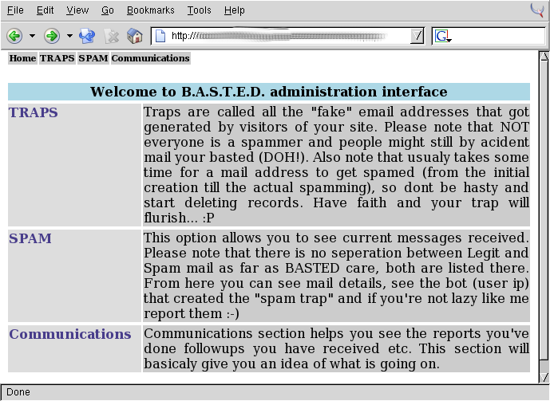
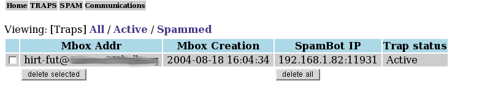
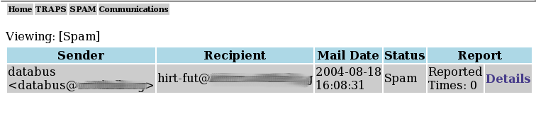
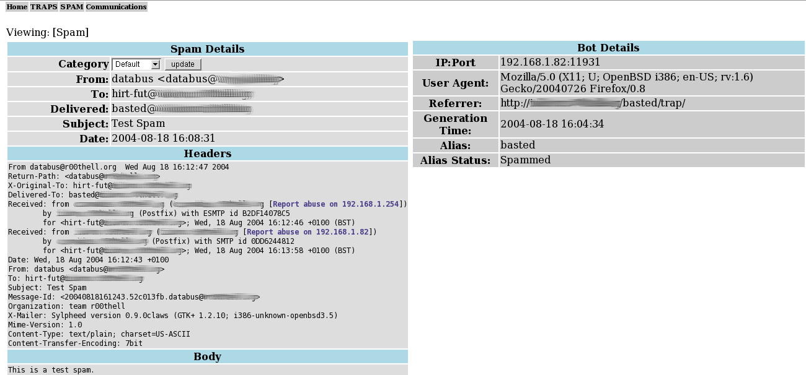
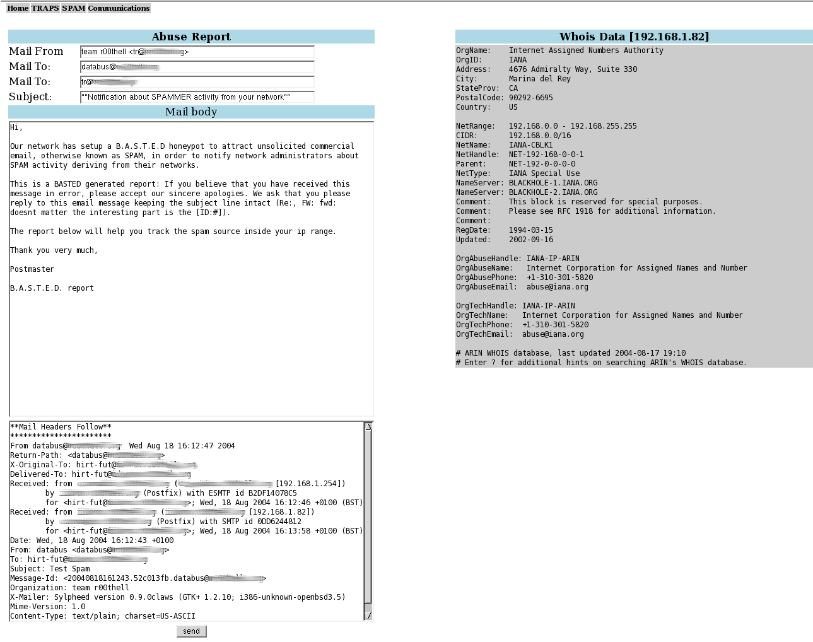
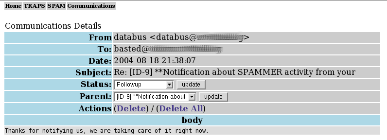

18 August, 2004
Since the first appearance of spam people always tried to find a way to fight those filthy spammers. Signature based spam filters, Bayesian filters, black lists, white lists and all sorts of things made the whole SMTP hosting ending up costing more money than it should. Most of those solutions are fine, nobody argues that, but they tent to be inadequate to handle the extremely fast growth and cleverness of some of those filthy spammers. Most of the times its required extremely high technical knowledge, other times the complexity kills the usability of this protocol. Knowing this in its easy to see why is there very few networks that have actually implemented a protection like those.
These problems couldn't let us (team r00thell) untouched. Although we find some of the simplest forms of protections to be the correct configuration and strict RFC compliance of our SMTP server, we just couldn't stand and watch all those bastard spammers polluting the Internet and the mailboxes of millions of users. What we realized is that there is a lack of actual and deep knowledge that is involved in the spam process.
So we started thinking of how one could possibly harm those pigs. Some of the ideas we came up with were truly effective but required that you either brake the law or having very high and specific skillet meaning that those solutions were not meant for the common user/administrator. Others required that you will start polluting too and the effectiveness of those solutions was questionable. We will list some of those solutions we came up in and explaining how we end up on creating BASTED.
One of the ideas was to start monitor for spammer activity and once we discovered one start hacking his ass off. Although this seemed to be effective in its own strange way it was hard to find supporters who would risk their freedom for a bunch of spammers. Its worth saying that in our testing period of this project we ended up hacking at least 5-10 spammers and its also worth mentioning that at least in 3 of those cases the spammers got their selves in really deep shit. One of them had given his credit card on a VoIP like company... In the first 5 minutes of publishing the details of this particular spammer more than $500 were billed into his credit card. Effective maybe, fun hell yeah, dangerous sure thing but...
But like all the nice things this wasn't meant to last, so we turned into other solutions. One of those was a distributed spam/DDoS system. The moment you receive a spam a central system gets notified, the spammer details get filtered verified and then his IP or email address is given to clients. Users start sending their spam/flood whatever until the spammer dies. Users who manage to flood/spam the most got extra points sort of like the Distributed.Net works but instead of trying to crack a key, you break the balls of spammers. After careful examination of this idea we realized that there is no actual way to verify the sayings of clients. This means that if i had something against a particular user i could fake a request and then the pure bastard would end up be flooded by hundreds of spam hater administrators all over the world. Defenantly NOT our way of working. So as you might imagine this idea didn't go far, not even from design to implementation. It ended being just a stupid idea ;-)
So after a lot of thinking we realised that we dont actualy know much about how the spammers work, where the hell do they find addresses? I mean yeah they do brute force accounts but this is only for simple ones, of the form (joe, marry, info, admin, postmaster, webmaster etc..).
Another thing that we didnt know is how long does it take to be spammed. Having all this in our minds we came to the conclusion that primary source of spammers addresses are bots that crawl sites, Google is also a good source. The whole thing ended up in the following:
And BASTED was born.
First let us tell you what BASTED is not. BASTED is NOT a spam filter, BASTED cant clean your mailbox from spam neither can protect you from receiving it without YOU taking some actions.
Basted can be described in the simplest form as a spam honeypot. With the ability to give you details about a spam and the user who sent it, giving you a bigger image on how this address ended up in the spammers hands and so on.
BASTED architecture is as simple as it gets. Knowing that this is some sort of honeypot its easy to imagine the concept behind it. Everything that reaches in is spam since there shouldn't be any communications involved.
In general all that BASTED does is to give you a better idea on how the spammers work, who and how this spammer works, allow you to fill abuse reports and keep track of whats going on.
So how this thing works? What is this thing does and what will offer you? Those and many more questions you might have will hopefully answered here.
In order to use BASTED you need either a dedicated VHOST for your honeypot or insert the code required in your existing PHP (the latest is not suggested).
When a someone visits the "trap" a unique email address is generated and stored in the database along with the visitors details. IP, port, referrer and all the rest of the useful headers of the visitors request. Also a mail alias is created for the postfix alias table.
When you receive a mail on any generated address the address status changes into spammed and you can now know who was responsible for this spam.
And after all the rambling its now time to see how you can use BASTED. This is the section where you learn how to do that.
If you carefully followed the instructions from the INSTALL files then you already have a small idea on how to use BASTED. Although some of the BASTED functions are still unknown to you.
So here it goes the first thing you'll see when you visit your administration interface is a screen like the following.

Each section has its own explanation (yeah yeah i know we lack good documentation but if you don't like it you can write one and sent it over).
Now in order to show you all the aspects of BASTED you'll have to play the spammer for a little bit. Yeah i know its disgusting idea but if you want to see how BASTED works then you'll have to do it.
Open another browser and visit the trap folder. Its in your BASTED distribution. Click on any of the two PHP files there (remember those are just examples). When you finish visiting the trap close the browser and go back to the administration interface. Click on TRAPS you should see something like the next screenshot.

The Mbox Addr, Mbox Creation and SpamBot IP will be different than the one shown here of course. The fields are self explanatory. Sent a mail to this address, its better if you do so from outside the current machine cause we need to have IP addresses of mailservers involved in order to show you some of the features. If you sent it from local system there might be no IP. After you finish mailing this trap the Trap status will be changed from Active to Spammed. Based on your configuration this address might or may not receive any further spam.
Now click on the SPAM link in the top right corner and you should see something like this.

In this form also the fields are self explanatory except the last two of them. Status is either Spam or Direct if a mail does not have a corresponding generated TRAP is considered Direct if it does then its Spam. The field Report will show you a counter on how many times you reported this spam and if you want to see more details hit the Details.
When you hit the details the screen will look like this

All the fields are self explanatory except two small details, the first is the Category drop down menu and the other is the link inside the Headers link saying Report abuse on X.X.X.X.
The Category field is used in case this isnt a spam but rather a normal mail. If its not a spam select Followup from the drop down menu and hit update. This will take you to the communications screen that we will describe in a bit. Now to the links, well this is where you have to decide where the spam came from. First versions of BASTED did that automatically but that left very large space for false positives and we don't want that so now you have to put your brainstorming hat and decide where to sent this abuse report. Click on any of those IP addresses, this will take you to the fill abuse screen like the one below.

The Mail From field is read only and cannot be changed, the value shown there is the value you put in the config.php script. Since this is our first abuse report we dont want to sent it to the real owners (we're just testing remember?). So before you move any further change the Mail To fields and place there your own email address. On your right you can see the whois data. This data is there for you to verify that BASTED grabed the correct email addresses to sent the abuse report. Please DO NOT rely on BASTED and always VERIFY that the address found in the Mail To field is the one that the abuse report should actually go.
After you're sure everything is alright hit send and go check your mailbox. Hit reply on the mail you just received and put as To address the address of BASTED real account. Return to your BASTED administration interface and click on SPAM again. You should see your reply there, click on details, from the next screen choose Followup from the drop down menu of Category and hit update.
This will take you to the Communications section. You should see now two two records showing there. One with status Initial Notification, (this is the report we sent) and one with status Followup this is the reply you just did. Click on the link of Followup. You should see something like this

The field Status has three options, Initial Notification, Followup and Solved. As you can tell this is the status of the abuse report, it allows you to have followups and solved in order to organize them the way you like.
The field Parent has a list of all Communications with status Initial Notification and this allows you to associate communications with abuse reports you've done.
And final the field Actions which allows you to Delete the current record or in case of a record which is of status Initial Notification and has followup mails to Delete All of them.
If you manage to read this far then we admire your courage, but besides that you are now familiar with almost all aspects of BASTED. We suggest you play a bit more before you actually deploy BASTED on a production system. If you have any questions or problems regarding BASTED please don't hesitate to contact us, we will be more than happy to answer your questions (IF we know the answers heheh).